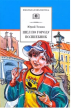

Повесть-сказка о самом обыкновенном четверокласснике, с которым начали происходить необыкновенные вещи - стали исполняться все его желания. Но это почему-то не сделало его счастливым. Для среднего школьного возраста.